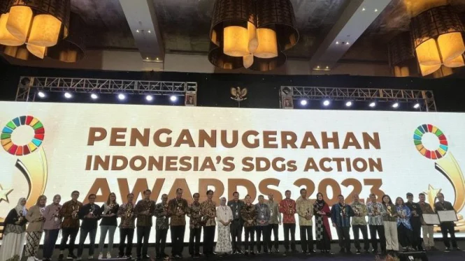
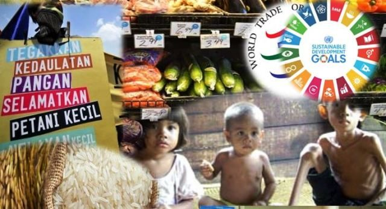
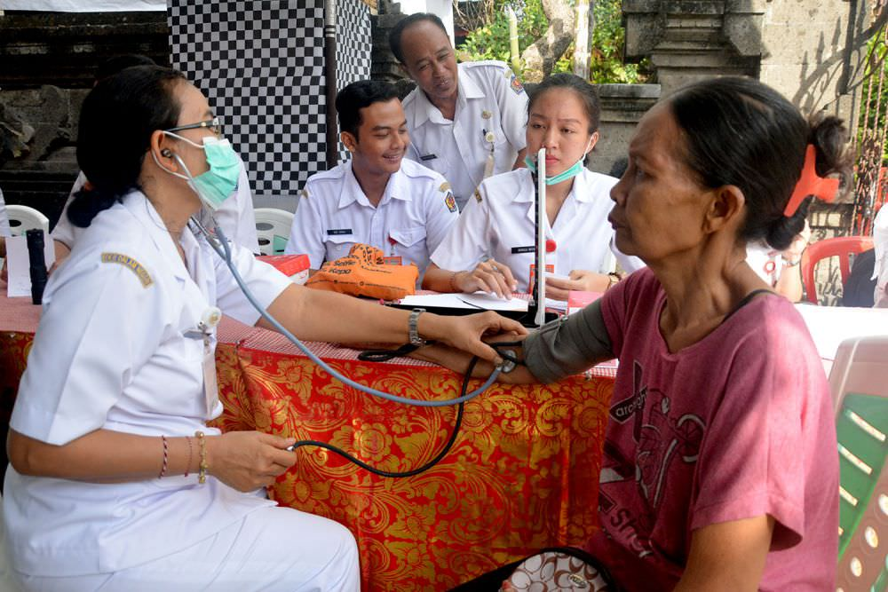

  
Tujuan utama Sustainable Development Goals (SDGs) adalah menciptakan keseimbangan antara pembangunan ekonomi, inklusi sosial, dan pelestarian lingkungan untuk memastikan kehidupan yang lebih baik bagi semua orang di seluruh dunia. SDGs terdiri dari 17 tujuan yang saling terkait, mulai dari mengakhiri kemiskinan, mengurangi ketimpangan, meningkatkan kualitas pendidikan dan kesehatan, hingga menangani perubahan iklim dan melestarikan ekosistem darat serta laut. Secara keseluruhan, SDGs bertujuan untuk mencapai pembangunan yang berkelanjutan, inklusif, dan berkeadilan, memastikan tidak ada seorang pun yang tertinggal, sekaligus menjaga bumi agar tetap layak huni untuk generasi mendatang.
Tujuan SDGs di bidang kesehatan, adalah untuk bisa menjamin kehidupan yang sehat dan mendorong kesejahteraan bagi semua orang di segala usia. Fokus utama dari tujuan ini mencakup berbagai aspek kesehatan, seperti mengurangi angka kematian ibu, bayi, dan balita melalui peningkatan akses terhadap pelayanan kesehatan berkualitas; mengendalikan dan mengakhiri epidemi penyakit menular seperti AIDS, malaria, tuberkulosis, dan hepatitis; serta mencegah dan menangani penyakit tidak menular melalui promosi gaya hidup sehat dan akses ke pengobatan. Selain itu, tujuan ini juga menekankan pentingnya memastikan akses universal terhadap layanan kesehatan, termasuk kesehatan reproduksi, keluarga berencana, dan vaksinasi yang terjangkau. Tak hanya itu, pengurangan kecelakaan lalu lintas yang menyebabkan cedera atau kematian serta peningkatan akses ke obat-obatan esensial dan teknologi kesehatan juga menjadi prioritas. Untuk mewujudkan hal ini, penguatan sistem kesehatan global, termasuk peningkatan kapasitas dalam mencegah dan merespons krisis kesehatan, menjadi langkah strategis. Dengan pendekatan yang inklusif dan berkeadilan, SDGs di bidang kesehatan bertujuan menciptakan masyarakat yang sehat, sejahtera, dan berdaya, tanpa meninggalkan seorang pun di belakang.